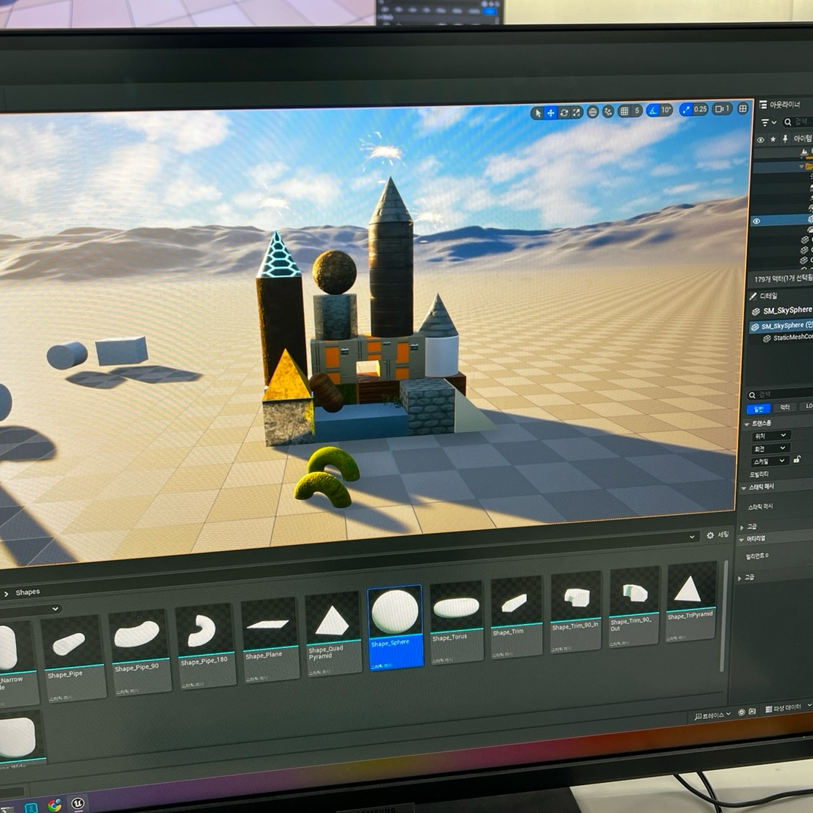
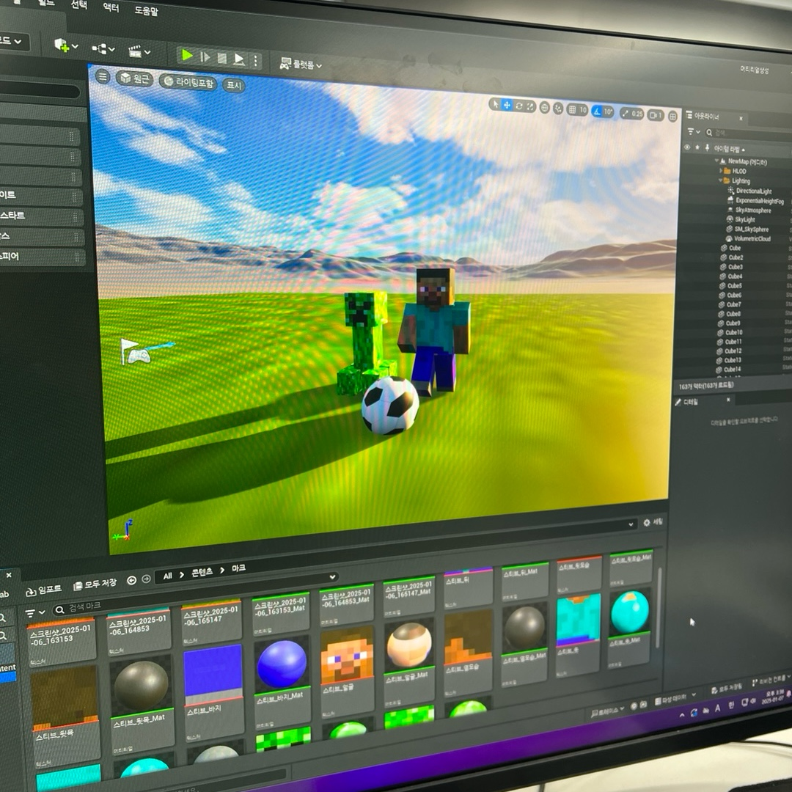
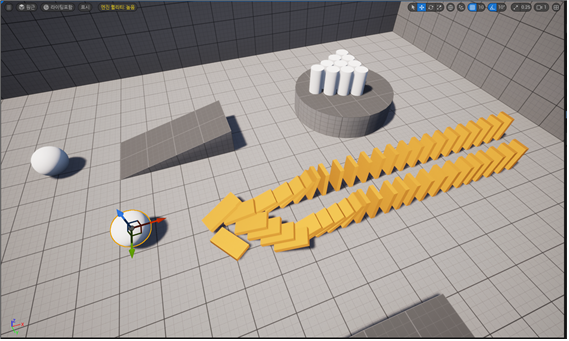
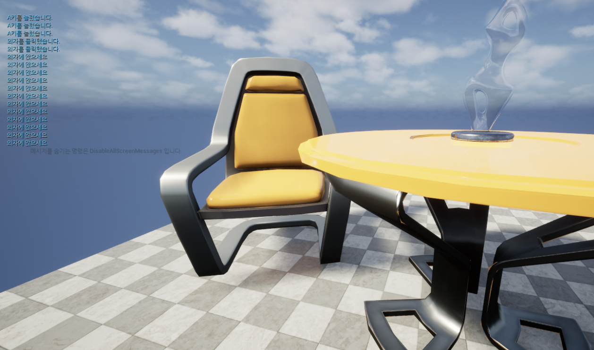
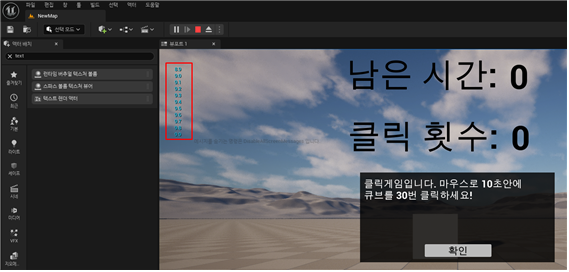
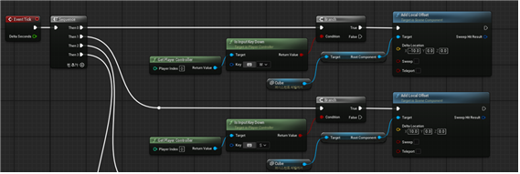
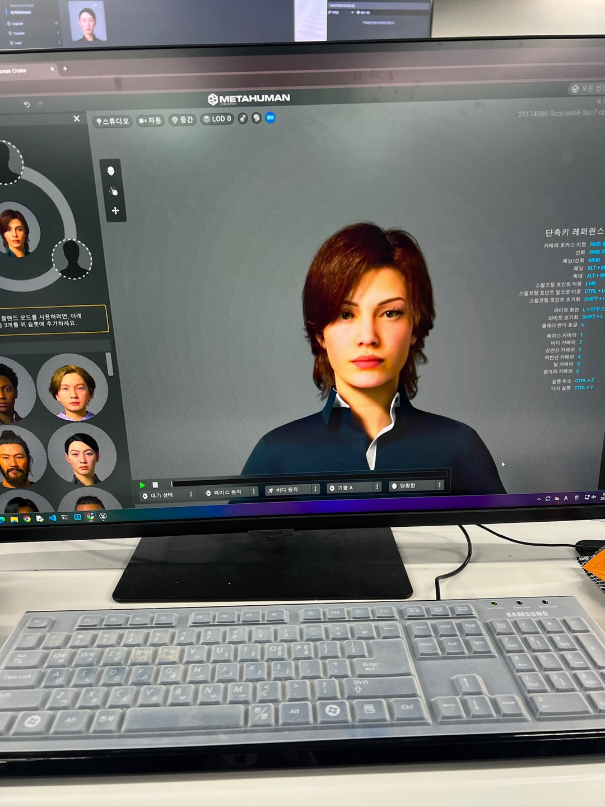
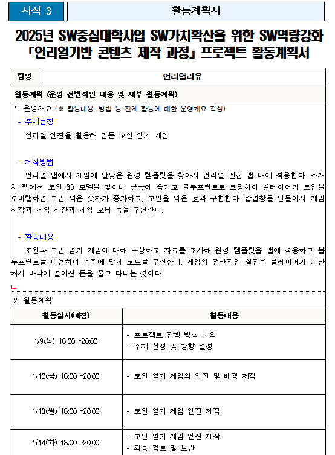
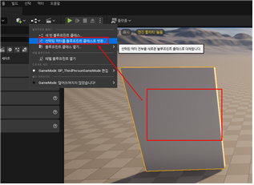
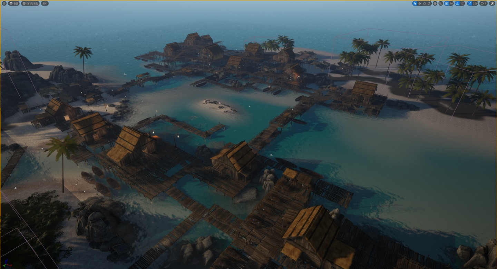

< 1일차 >
1일차엔 언리얼의 기본 인터페이스와 3D 오브젝트 조작 방법을 학습하고,
간단한 구조물을 만들어 언리얼 조작에 익숙해지는 시간이었다.
언리얼 설치 및 프로젝트 생성하는 방법부터 배우기 시작했다.
이후에도 언리얼의 기본 액터 생성 및 조작 방법을 배워서
3D 오브젝트를 활용하여 간단한 구조물을 만들어보았다.

또한, 텍스처를 사용하여 오브젝트의 외형을 꾸미는 방법을 배우고,
간단한 마인크래프트 캐릭터도 제작해보았다.
텍스처 입히는 것은 생각보다 쉽지 않았다.
큐브 오브젝트 각 면에 다른 텍스처를 따로따로 입혀줘야하기 때문에 완전 노가다였다.. ㅜ
그래도 다 완성하고나니 귀엽게 잘 만들어진 것 같아 뿌듯했다.

< 2일차 >
2일차엔 언리얼의 물리 엔진을 이해하고, 피직스 시뮬레이션을 사용하여
도미노와 볼링 게임을 만들어봤다.
오브젝트에 Rigidbody와 Collider 컴포넌트를 추가하여
중력, 마찰력, 충돌 처리 원리에 대해서 배웠다.
오브젝트로 도미노를 세우고 Rigidbody와 Collider를 추가하고,
장애물 Sphere 오브젝트엔 Rigidbody만 추가했다.
다 완성한 후 Sphere 오브젝트로 도미노를 밀어보니 정말 와르르 다 무너졌다.

오후엔 외부 3D 모델을 언리얼로 임포트하고, 머티리얼을 연결해봤다.
Sketchfab에서 다운 받은 배경을 내 프로젝트에 임포트하고
내 나름 영화 속 한 장면을 연출해보았다. ㅎㅎ
Sketchfab에서 .fbx인 모델을 다운 받으면 오브젝트에 직접 머티리얼을 입혀줘야하는데
내가 원하는 모델을 찾기도 쉽지 않았고, 살짝 헷갈리는 부분이 있었으면서도 재밌었다.
내가 만든 영화 속 한 장면은 쿵푸팬더이다.

< 3일차 >
3일차엔 입력 이벤트에 대해서 배웠다.
마우스 클릭, 키보드 입력, 오브젝트 클릭, 다른 오브젝트와 충돌 or 통과 시
이벤트가 발생하도록 하는 것이다.
마우스 커서도 화면에 보이도록 하고 싶으면 직접 설정해줘야 했다.
여기서 제일 신기했던 점은 언리얼은 내가 자신이 없는 코드와는 다르게 블루프린트를 쓰는 것이었다.
이미 다 짜여진 코드를 블록처럼 끼워 맞추는 방식이었어서 혁명이었다.
그래서 나는 위와 같은 여러 입력 이벤트를 활용해 간단한 콘솔을 출력하는 실습을 해보았다.

오후엔 팝업창을 만들어 보았다.
콘텐츠 브라우저에 '위젯 블루프린트'를 생성하고 게임소개 팝업창을 제작했다.
계층구조는 팝업창-캔버스 패널-보더-캔버스 패널-텍스트-버튼-텍스트로 구성되어있다.
레벨 블루프린트에서 게임이 시작하면(Event Begin Play) 내가 만든 팝업창이 뜨도록 설정했다.
팝업창의 확인 버튼을 누르면 Remove from Parent 노드를 사용하여 팝업창이 사라지도록 했다.
다른 코드 언어들과는 다르게 블루프린트 짜기는 쉬웠지만 모든 것 하나하나에 이벤트와 타겟 등을
설정해주어야 해서 조금 헷갈렸다.
시작 팝업창 외에도 다른 여러 팝업창을 만들어보았다.

< 4일차 >
4일차엔 동작 관련 블루프린트 만들기를 배웠다.
캐릭터가 WASD키를 눌렀을 때 이동하는 블루프린트를 만드는 것이다.
블루프린트의 Evnet Tick을 사용하여 매 프레임마다 캐릭터의 위치를 업데이트하고
WASD키 입력에 따라 캐릭터의 위치를
전진, 후진, 왼쪽이동, 오른쪽 이동이 되도록 구현했다.

그리고 언리얼엔진에서 MetaHumans를 만들었다.
캐릭터를 내가 원하는대로 꾸며서 생성하면 언리얼엔진 내에서 사용할 수 있다.
콘텐츠 브라우저에서 '피처 또는 콘텐츠 팩 추가' 버튼을 눌러서 '삼인칭' 블루프린트를 추가하고
메시(마네킹) 하위에 Root(메타휴먼)이 들어가도록 한다.
메타휴먼 블루프린트를 열어서 아까 만든 동작 관련 블루프린트를 복붙해서 넣어주면 완성이다.
오른쪽 영상은 FAB에서 도시 관련 3D 환경을 프로젝트에 추가한 후,
데모 맵에서 메타휴먼 캐릭터를 추가하여 자유롭게 이동시켜보는 영상이다.
수업 마지막쯤엔 2명씩 조를 짜서 게임을 하나씩 만들어내기로 했다.
그래서 프로젝트 계획서도 제출하고 다음주부턴 본격적으로 프로젝트도 만들어내야 한다.
아래는 나의 프로젝트 활동 계획서이다.


< 5일차 >
5일차엔 각 팀끼리 프로젝트를 만드는 데에 필요한 기능을 정리해서
강사님께 말하면 그 주제로 수업해주시고 남은 시간은 프로젝트를 만드는 시간이었다.
그래서 오전엔 각 팀들이 궁금해하던 기능을 설명해주셔서 이것저것 다양하게 배웠다.
애니메이션을 사용한 작용이벤트나 블루프린트 클래스에서 다른 액터를 참조하는 등
나는 안 쓸 기능이긴 했다만 열심히 수업에 따랐다.

나는 주로 언리얼 엔진 구현하는 것을 맡았고, 내 친구는 효과음이나 3D 모델링을 맡아서 작업했다.
혼자 엔진을 구현하다보니 막히는 부분도 많고 많이 힘들었다.
우선, 어제 작성한 계획서를 토대로 우리가 원하는 방향의 맵을 찾는 것에 집중했다.
에셋스토어엔 무수히 많은 환경이 있었지만, 마음에 드는 게 없어서 찾다가 시간을 많이 소모했다.
결국, 친구에게 적당한 맵 찾는 것을 부탁한 후 나는 할 수 있는 것부터 구현하기 시작했다.
수업에서 배웠던 메타휴먼을 프로젝트에 넣고 WASD 키를 이용하여
캐릭터를 움직이는 것까지 구현해냈다.